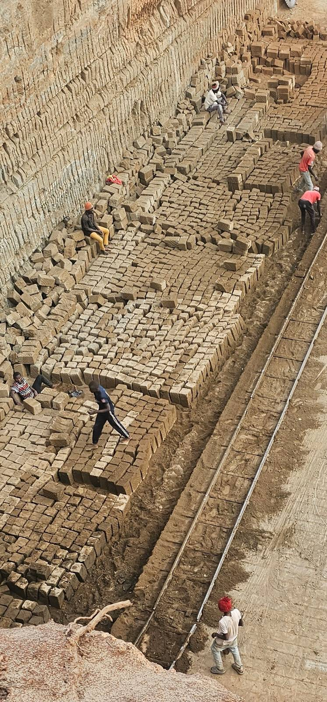
KOMO · KIAMBU COUNTY · KENYA
We quarry, cut and supply Ndarugo building stone — and hire out and sell heavy equipment for quarry, construction and earthmoving work.
ABOUT US
Quarry Machinery & Construction is a quarry and construction business in Komo, Kiambu County, producing quality machine-cut building stone known locally as Ndarugo.
We operate our own rail-mounted stone-cutting saws, wheel loaders and excavators on site — from cutting stone out of the quarry face to loading it for delivery. That means fewer delays between quarrying, cutting and getting material to your site.
Beyond stone production, we service and maintain quarry machinery, and support construction projects that need reliable stone and equipment.
We've also grown into heavy equipment hire and sales — stone-cutting machines, wheel loaders and bulldozers — supplying quarry and construction operators beyond our own site.
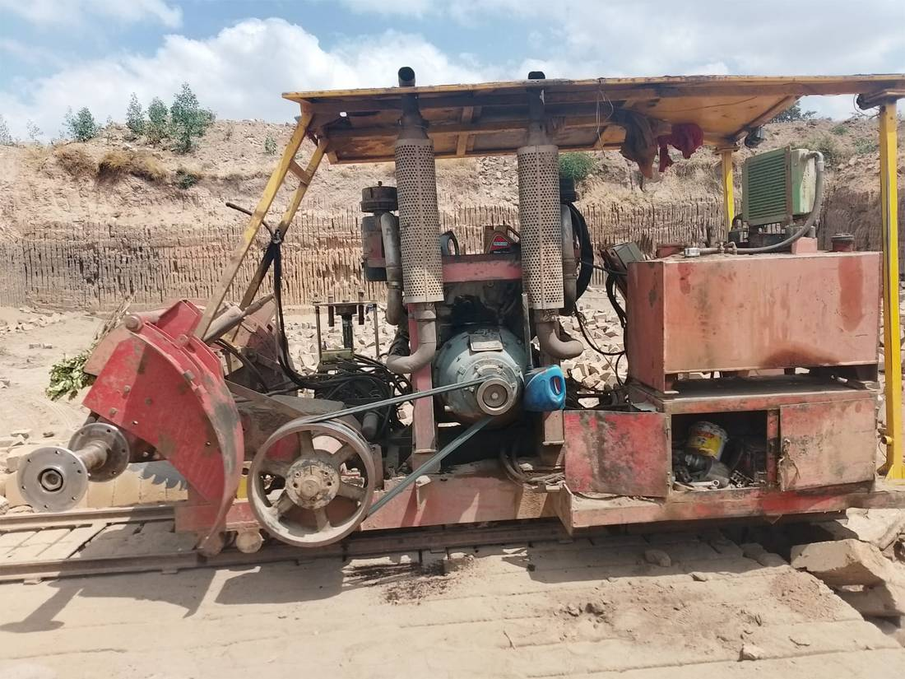
WHAT WE DO
Five ways we work with builders, developers and other quarry operators.
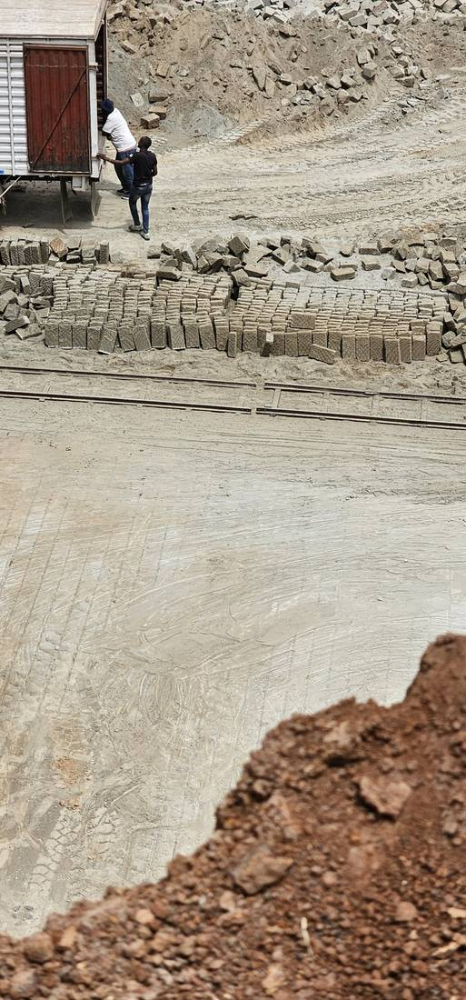
Quality machine-cut building stone, popularly known as Ndarugo, cut to size and ready for delivery.
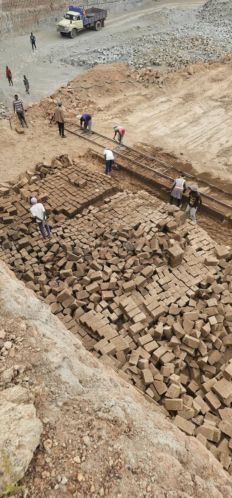
Quarry excavation, stone production and material preparation across the site.
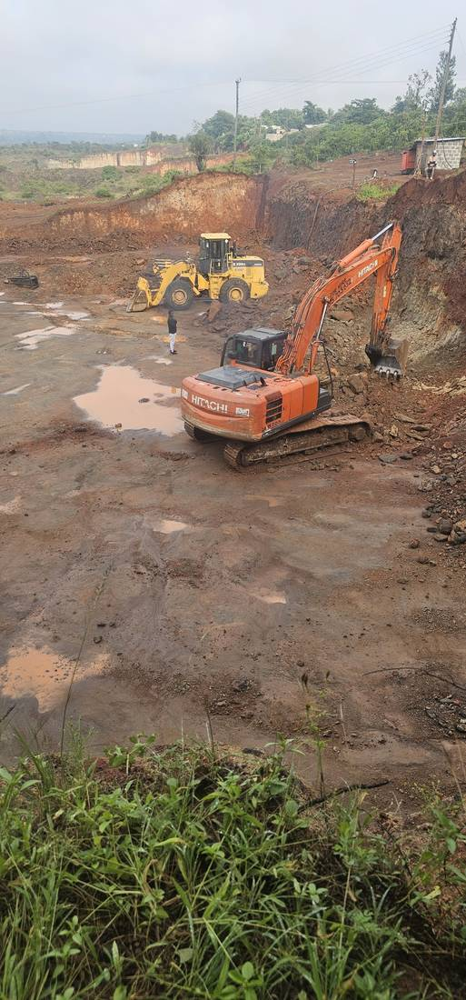
Quarry machinery and equipment — excavators, loaders and rail saws — run and maintained for construction operations.
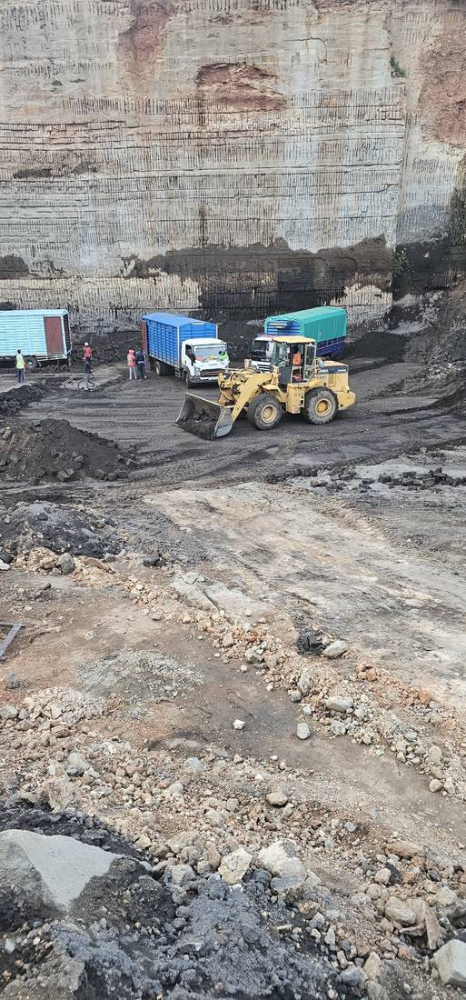
Supporting construction projects with quality quarry materials, loading and haulage.
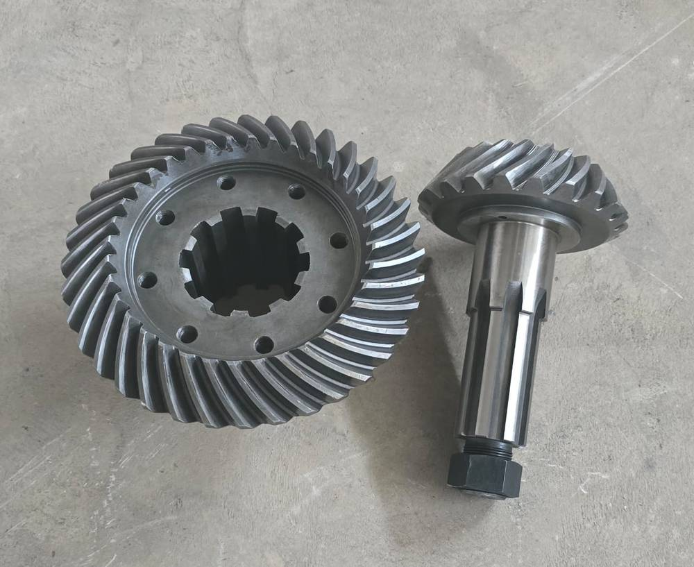
Genuine SKF bearings and other spare parts for quarry machinery, in stock and ready to order. Visit the shop
HIRE & SALES
Beyond our own site, we hire out and sell heavy machinery across these categories — and we're always open to new brands, especially from China.
Rail-mounted and mobile stone-cutting saws for quarry production.
For loading, stockpiling and yard work at the quarry or site.
For clearing, grading and overburden removal.
Excavators, generators and more — especially Chinese brands. Tell us what you need.
SPARE PARTS SHOP
SKF, Koyo, NSK, FAG, Timken and more. Sizes are bore × outside diameter × width. Search by bearing number or pick a type, then tap Order on WhatsApp and we'll confirm stock, price and delivery.
This used Deutz F(L)413 air-cooled V8 diesel engine — the same engine that powers stone-cutting machines from MACCA, Pavoni and D'Amico — has been sold. Looking for a similar engine? Message us and we'll help you find one.
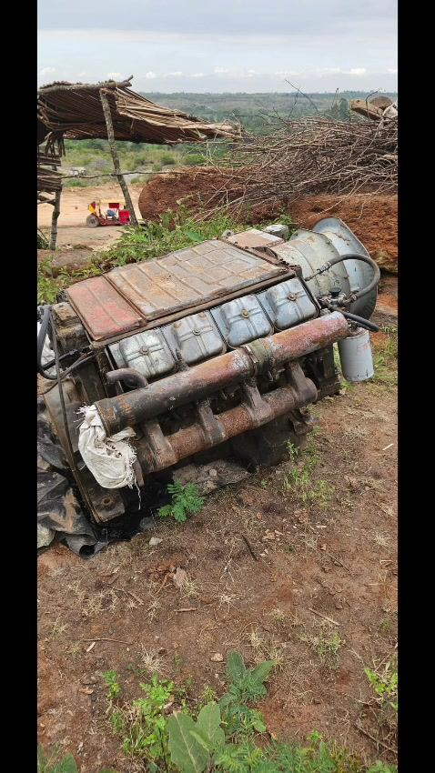
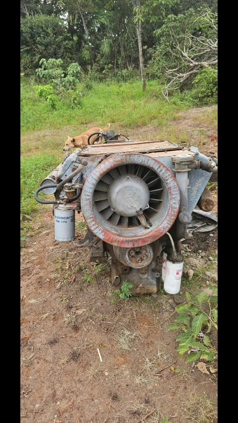
ON SITE
A look at the equipment and the work, day to day.
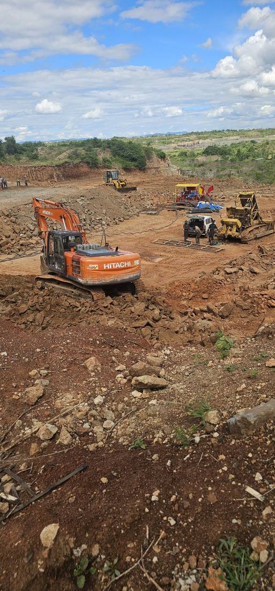
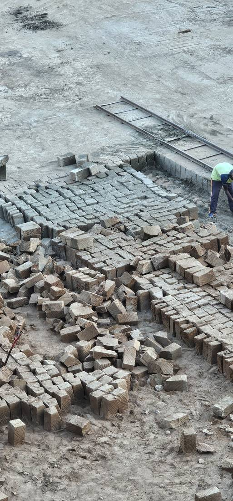
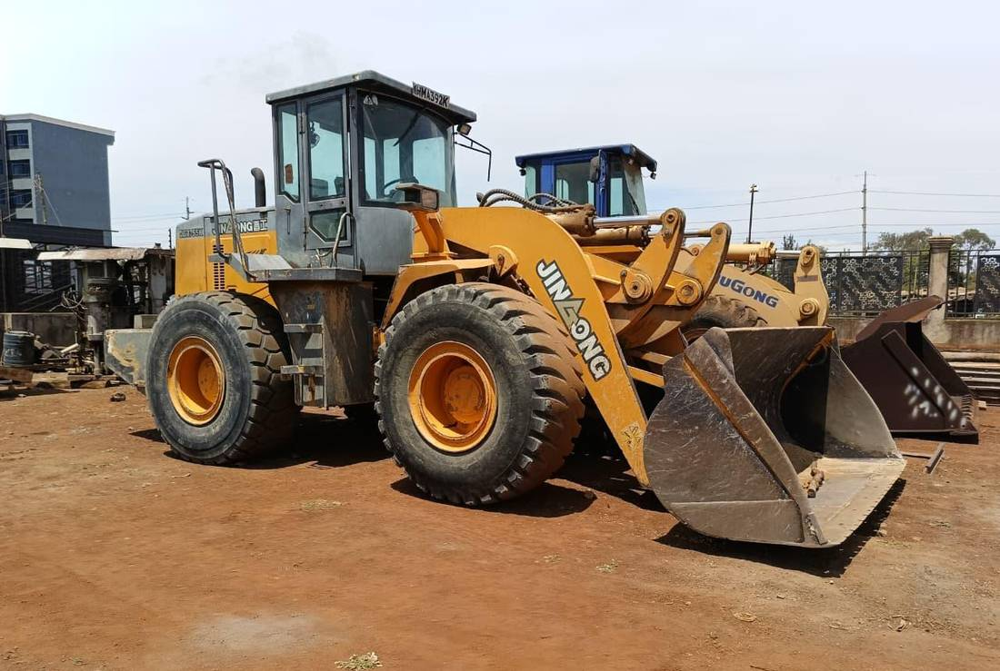
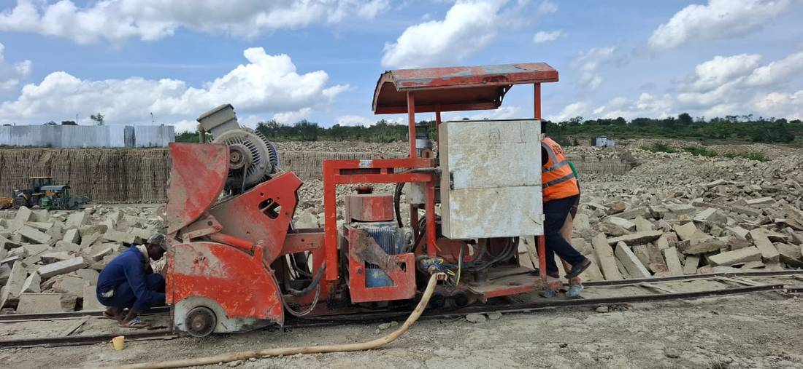
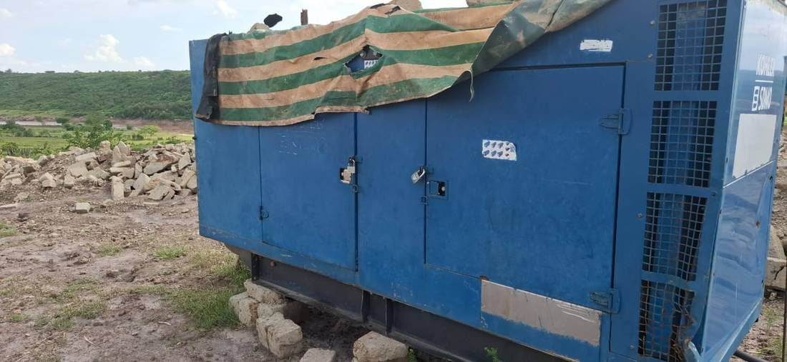
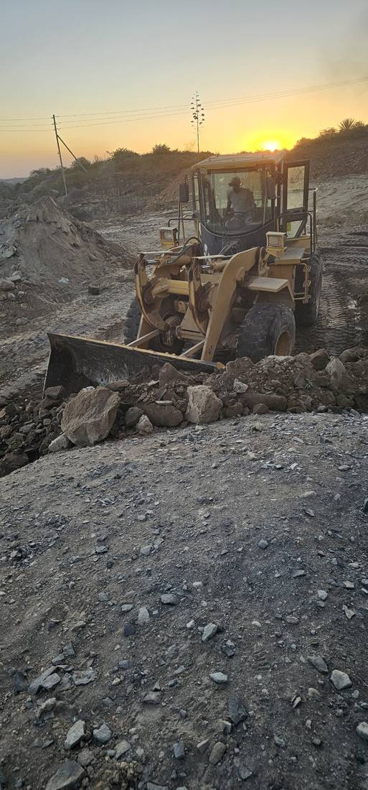
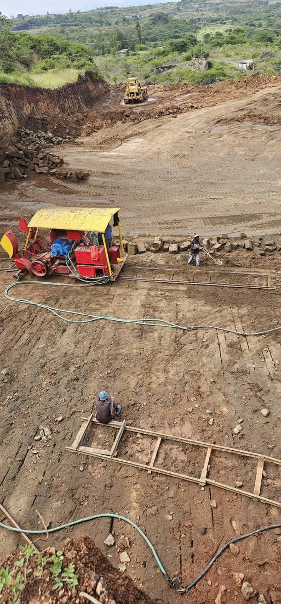
ON YOUTUBE
Watch our latest video below.
LOOKING AHEAD
We're planning our next cut into the quarry, working from the shallower side first to reach good-quality grey stone faster.
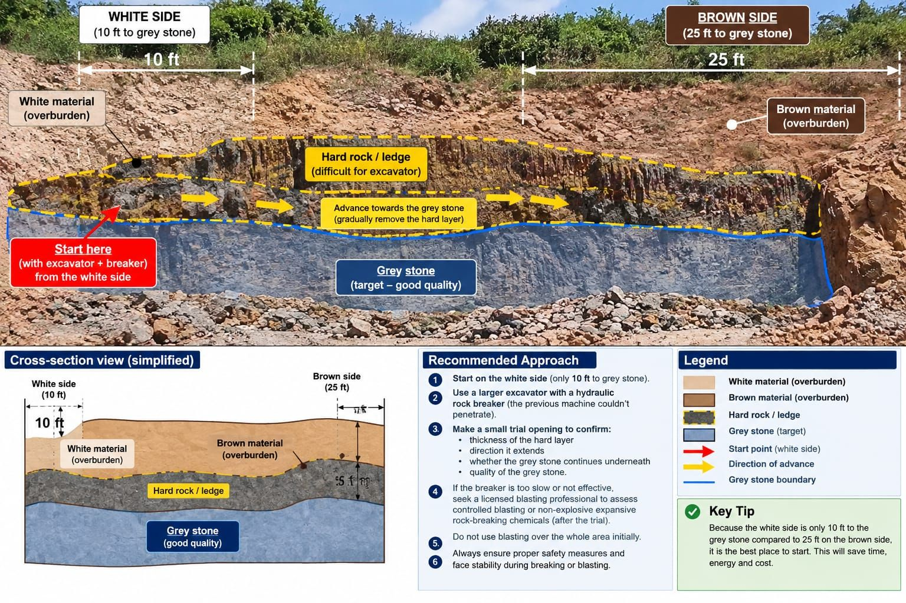
Only about 10 ft of overburden separates the white side from the grey stone, against 25 ft on the brown side — so we start there to save time and cost.
A hard rock ledge sits above the grey stone. We're bringing in a larger excavator with a hydraulic breaker to open a trial section and confirm its thickness and direction.
Once the trial confirms good-quality stone underneath, we advance gradually across the face rather than opening the whole area at once, keeping the working face stable and safe.
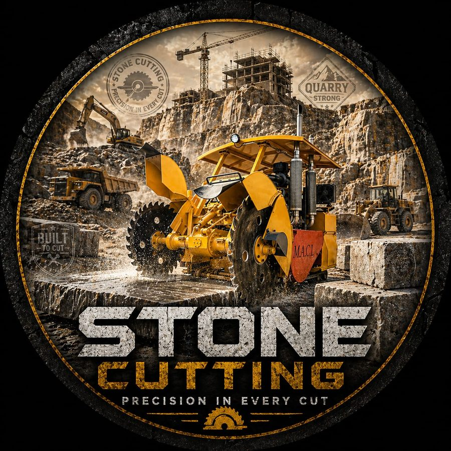
OUR CRAFT
From the quarry face to the finished block, every stage of our stone-cutting is built around accuracy, consistency and getting quality Ndarugo to site on time.
GROWING TOGETHER
We're expanding into equipment hire and sales, focused on new and locally used heavy machinery, and we're looking for partners to stock with us under agreed terms.
An established base in Komo, Kiambu County, with an existing customer network of quarry and construction operators, ready yard space to display machinery, and a team that knows the equipment.
New and locally used stone-cutting machines, wheel loaders, bulldozers and other heavy equipment — especially Chinese brands — ready to place with a partner on the ground.
Terms agreed case by case — consignment, commission on each hire or sale, or a shared-revenue arrangement, depending on what suits the equipment and the partner.
GET IN TOUCH
Phone
+254 712 272 180Location
Komo, Kiambu County, KenyaMessage us on WhatsApp with your location and quantity, and we'll get back to you with pricing and availability.
WhatsApp Us